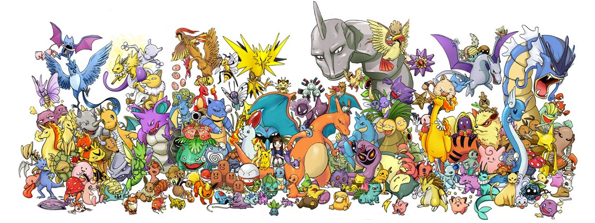

O Guia Ilustrado que vai te ajudar como treinador Pokémon Go! Aqui você vai saber mais sobre os Pokémons da região de Kanto.
O que é o Pokémon GO?
Produzido pelo estúdio Niantic, Pokémon Go é um jogo de realidade aumentada para dispositivos móveis que propõe converter-nos em treinadores de Pokémon no mundo real. Para isso, é preciso ativar a geolocalização (GPS) e conectividade de dados no smartphone e interagir com o mundo ao nosso redor, Ginásios e PokéStops, onde poderás apanhar centenas de Pokémons diferentes. A aplicação monitoriza os nossos movimentos e vai dando alertas quando temos um Pokémon por perto para apanhar.
